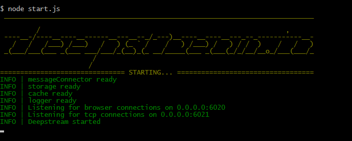

Getting started
Learn how to
- install and start a deepstream server
- connect to it from a browser
- create a record
- wire the record to a text input
Server
Install the server via npm
npm install deepstream.io
Create a js file, e.g. start.js with the following content
var DeepstreamServer = require( 'deepstream.io' ),
server = new DeepstreamServer();
// Optionally you can specify some settings, a full list of which
// can be found here //deepstream.io/docs/deepstream.html
server.set( 'host', 'localhost' );
server.set( 'port', 6020 );
// start the server
server.start();
run the file with node
node start.js
your console should now show this

Client
Install the javascript client via bower or npm or download it here
bower install deepstream.io-client-js
Create a simple webpage with a single text input field.
<!DOCTYPE html>
<html>
<head>
<script
type="text/javascript"
src="bower_components/deepstream.io-client-js/dist/deepstream.js">
</script>
</head>
<body>
<input type="text" />
<script type="text/javascript">
//js goes here
</script>
</body>
</html>
Connect to the server and login without credentials.
ds = deepstream( 'localhost:6020' ).login();
Create a record
record = ds.record.getRecord( 'someUser' );
Wire it up to the input
input = document.querySelector( 'input' );
input.onkeyup = function(){
record.set( 'firstname', input.value );
};
record.subscribe( 'firstname', function( value ){
input.value = value;
});
Now open your page in two browser windows and watch both inputs stay in sync. Alltogether your page should now look like this:
<!DOCTYPE html>
<html>
<head>
<script
type="text/javascript"
src="bower_components/deepstream.io-client-js/dist/deepstream.js">
</script>
</head>
<body>
<input type="text" />
<script type="text/javascript">
ds = deepstream( 'localhost:6020' ).login();
record = ds.record.getRecord( 'someUser' );
input = document.querySelector( 'input' );
input.onkeyup = function(){
record.set( 'firstname', input.value );
};
record.subscribe( 'firstname', function( value ){
input.value = value;
});
</script>
</body>
</html>
Where to go from here?
There are two options:
- This tutorial only used records. Learn about deepstream's other concepts in the Events & RPC Tutorial or find out about deepstream's support for WebRTC
- In this tutorial, deepstream stored all data in memory. For persistance, deepstream can connect to a distributed cache (Redis, Memcached etc.) and to a database (RethinkDb, MongoDb etc). It can also connect to a message broker (AMQP, Redis) or directly via TCP to scale horizontally. Learn about this in the connectors and deployment tutorial.
deepstream & HTTPS
- To run deepstream.io over HTTPS all you have to do is provide the server with an sslCert and sslKey option.
-
javascript server.set('sslCert', fs.readFileSync( './keys/cert.pem', 'utf8' )); server.set('sslKey', fs.readFileSync( './keys/key.pem', 'utf8' ));